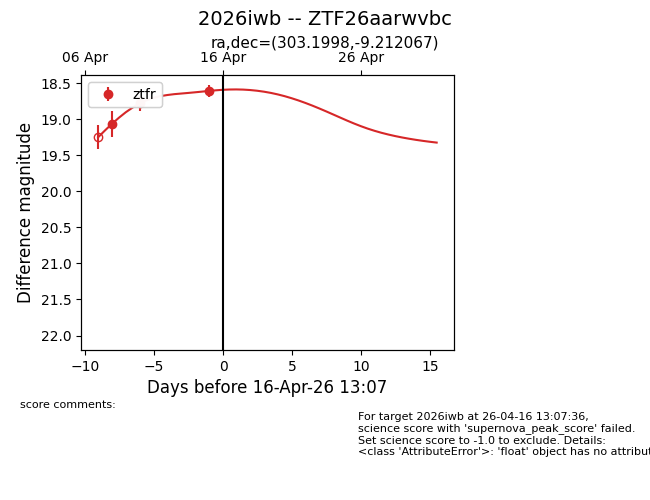
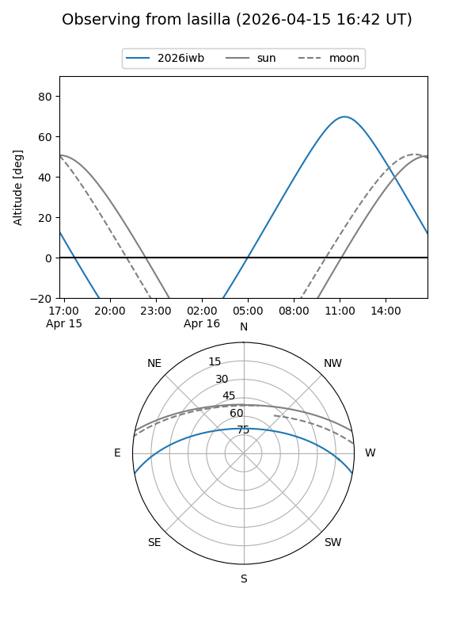
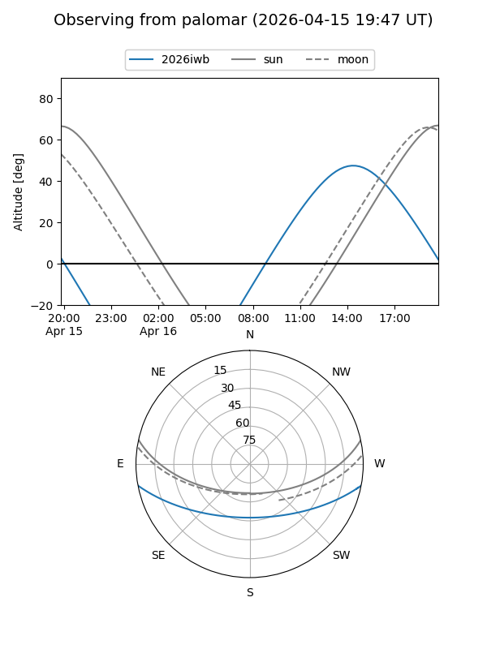
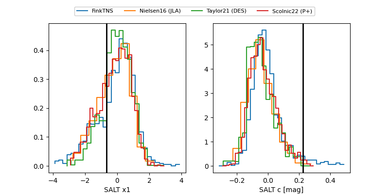

2026iwb
Target 2026iwb at 2026-04-16 13:14
Aliases and brokers:
FINK: link
Lasair: link
ALeRCE: link
TNS: link
YSE: link
alt names
ZTF26aarwvbc (ztf,fink_ztf)
2026iwb (tns,yse)
Coordinates:
equatorial (ra, dec) = 303.1998,-9.21207
equatorial (HMS+DMS) = 20:12:47.95,-09:12:43.44
galactic (l, b) = (33.7971,-22.23239)
Flags:
Photometry:
last ztfr=18.61
3 ztfr detections
Lightcurve

Visibility


Additional plots
